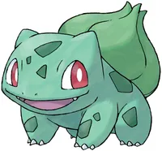

the 3 started pokemons in gen 1 are Charmander, Squirtle, and Bulbasaur. and the the best one depends on your play style, if you like fire pokemon charmander is your pick, but over all Bulbasaur is the most helpful especially early game, so he can countinue in your roster until you get better grass types like Venusaur
